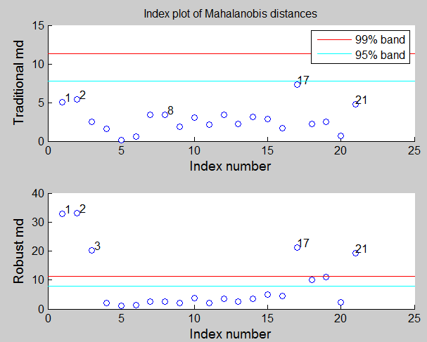

| Flexible Statistics Data Analysis Toolbox™ |
|
| Provide feedback on FSDA toolbox |
Plots the Mahalanobis distances against index number.
malindexplot(md,v)
malindexplot(md,v,param1,val1,param2,val2,...)
malindexplot(md,v) plots the Mahalanobis distances against index number. The input argument of this function may be conveniently produced by function Smult or MMmult.
|
Note It is worthwhile to remark the difference between function malfwdplot from function malindexplot. The former shows a 'movie' of the Mahalanobis distances, i.e. it enables to show how the Mahalanobis distances for each unit evolve as the subset size increases. The latter shows the static plot of the Mahalanobis distances against the index number or fitted value or against any other statistic. Remark Only one malindexplot figure at a time can be left open. |
malindexplot(md,v) needs as input a vector of (squared) Mahalanobis distances or a structure containing fields md and Y and a scalar v informing about the number of variables which have been used to compute md.
malindexplot(md,v,param1,val1,param2,val2,...) specifies one or more of the name/value pairs described in the following table.
| Parameter | Value |
|---|---|
| 'x' |
The vector to be plotted on the x-axis. As default the sequence 1:length(md) will be used. |
| 'h' |
The axis handle of a figure where to send the malindexplot. This can be used to host the malindexplot in a subplot of a complex figure formed by different panels (e.g. a panel with malindexplot from a classical mle estimator and another with Mahalanobis distances from a robust analysis: see example below). |
| 'labx' |
A label for the x-axis (default: 'Subset size m') |
| 'laby' |
A label for the y-axis (default: ''). |
| 'titl' |
A label containing the title of the plot. Default value is 'Index plot of Mahalanobis distances' |
| 'numlab' |
Number of points to be identified in plots. If numlab is equal a cell containing scalar k, the units with the k largest Mahalanobis distances are labeled in the plots. If numlab is a vector, the units inside the vector are labeled in the plot. For no labeling leave it empty. The default value of numlab is {5} that is units with the 5 largest Mahalanobis distances are labelled. |
| 'conflev' |
Confidence interval for the horizontal bands. Remark: confidence interval is based on the chi^2 distribution. It can be a vector of different confidence level values, e.g. [0.95,0.99]. |
| 'FontSize' |
Scalar which controls the font size of the labels of the axes. Default value is 12. |
| 'SizeAxesNum' |
Scalar which controls the size of the numbers of the axes. Default value is 10. |
| 'xlimx' |
Vector with two elements which controls minimum and maximum value of the x axis. Default is ' ', automatic scale. |
| 'ylimy' |
Vector with two elements which controls minimum and maximum value of the y axis. Default is ' ', automatic scale. |
| 'lwdenv' |
Scalar which controls the width of the lines associated with the envelopes. Default is lwdenv=1 |
| 'MarkerSize' |
A scalar specifying the size of the marker in points. The default value for MarkerSize is 6 points (1 point = 1/72 inch). |
| 'MarkerFaceColor' |
The fill color for markers that are closed shapes (circle, square, diamond, pentagram, hexagram, and the four triangles). |
| 'databrush' |
Empty value scalar or structure. If databrush='' (default) brushing is not enabled else if it is a scalar it is possible to brush the points with the mouse using all default options. The core of this option is selectdataFS, a function used by all graphic tools of the FSDA toolbox. A separate common page details all options of structure databrush. |
Plot of the robust Mahalanobis distances for the stack loss data. Note that with a mouse click on the legends text it is possible to show/hide the corresponding confidence bands in the plot (malindexplot makes use of ClickableMultiLegend).
load('stack_loss.txt');
X=stack_loss(:,1:3);
[n,v]=size(X);
% Define confidence level
conflev=[0.95,0.99];
figure;
h1=subplot(2,1,1);
% Compute traditional Mahalanobis distances
mdtrad=mahal(X,X);
malindexplot(mdtrad,v,'h',h1,'conflev',conflev,'labx','Index number','laby','Traditional md');
% Compute robust md
[out]=FSM(X,'init',5,'plots',0);
seq=1:size(X,1);
good=setdiff(seq,out.ListOut);
mdrob=mahal(X,X(good,:));
h2=subplot(2,1,2);
malindexplot(mdrob,v,'h',h2,'conflev',conflev,'labx','Index number','laby','Robust md','title','');

| Provide feedback on FSDA toolbox |
|
|
malfwdplot.html | mcd.html |
|